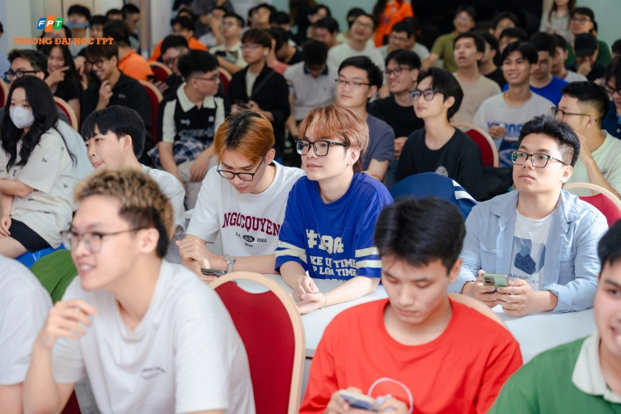
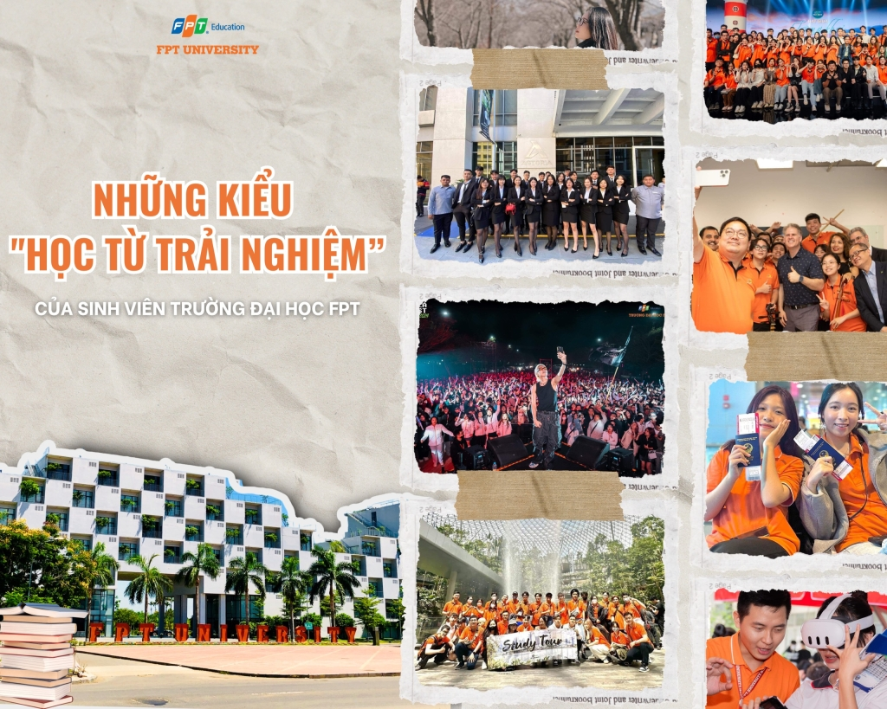
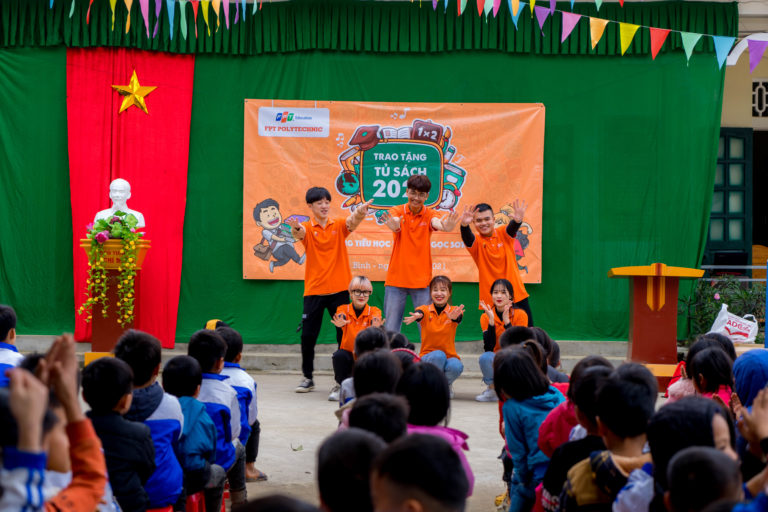
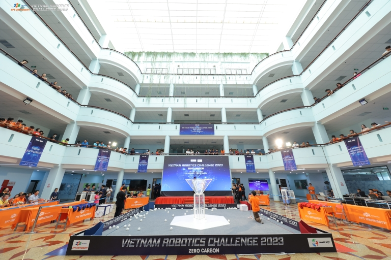
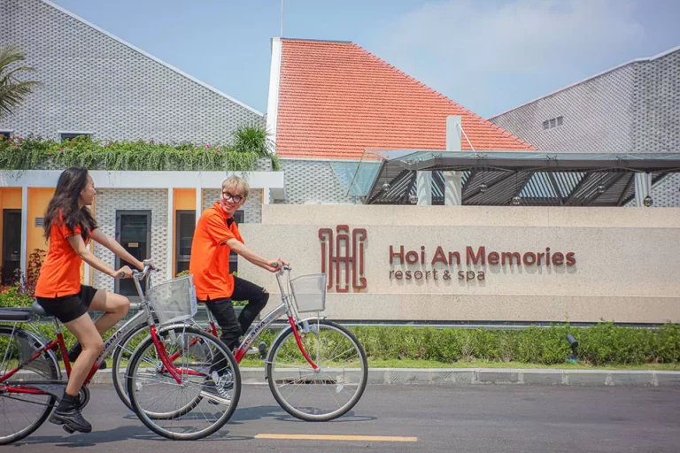
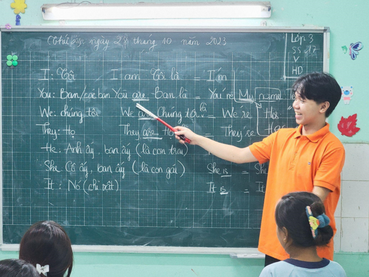

Tin Tức
Cơ hội nhận học bổng và làm việc tại Nhật Bản từ FPT Software
Chị Nguyễn Bích Hạnh-Trưởng phòng giảng viên-Học viện đào tạo ngôn ngữ LTI cũng chia sẻ kinh nghiệm học tiếng Nhật đến sinh viên. Bên cạnh đó các bạn còn được lắng nghe những chia sẻ quý báu về kinh nghiệm làm việc và bí quyết thành công từ các diễn giả, cũng như khám phá tiềm năng to lớn của thị trường Nhật Bản.
Những kiểu “học từ trải nghiệm” của sinh viên Trường Đại học FPT
Học từ trải nghiệm” khi tham gia học tập, trao đổi nước ngoài
Học từ trải nghiệm” qua Học kỳ doanh nghiệp (OJT) Học từ trải nghiệm” khi làm việc tại "các ông lớn” trong ngành" Học từ trải nghiệm” khi tham gia hoạt động của câu lạc bộSinh viên trường Đại học FPT lan tỏa nhiều hoạt động ý nghĩa cho cộng đồng
Chương trình “Lớp vẽ cộng đồng” do giảng viên, sinh viên ngành Thiết kế Mỹ thuật số-trường Đại học FPT tổ chức vào thứ bảy hàng tuần, dành cho các bé từ 5 đến 20 tuổi tại Chùa Diệu Giác và làng Thiếu niên Thủ Đức có niềm đam mê và yêu thích bộ môn.
Hoạt Động
Trường Đại Học FPT công bố tổ chức giải đấu robot quy mô toàn cầu Việt Nam
Trường Đại học FPT hợp tác với FIRST tổ chức giải đấu robot quốc tế FIRST Tech Challenge Vietnam để chọn đội khu vực đại diện tranh tài toàn cầu vào tháng 4/2024.Những năm gần đây, nhiều đội tuyển học sinh, sinh viên Việt Nam đạt thành tích tốt tại các giải đấu robot quy mô toàn cầu.
Hội thảo tìm hiểu thông tin nhóm ngành Quản trị du lịch và Khách sạn
Open day-sự kiện dành cho 2K4 quan tâm đến nhóm ngành Quản trị du lịch và Khách sạn. Đến với hội thảo, học sinh có cơ hội giao lưu cùng Tập đoàn Quản lý khách sạn lớn nhất thế giới-Marriott international và trải nghiệm Workshop “phù phép” món ăn bằng nghệ thuật trang trí “Food design”
Sinh viên trường Đại học FPT lan tỏa nhiều hoạt động ý nghĩa cho cộng đồng
Chương trình “Lớp vẽ cộng đồng” do giảng viên, sinh viên ngành Thiết kế Mỹ thuật số-trường Đại học FPT tổ chức vào thứ bảy hàng tuần, dành cho các bé từ 5 đến 20 tuổi tại Chùa Diệu Giác và làng Thiếu niên Thủ Đức có niềm đam mê và yêu thích bộ môn.Tại đây, các em sẽ được học các kỹ thuật vẽ cơ bản, rèn luyện khả năng sáng tạo và tư duy nghệ thuật dưới sự hướng dẫn tận tình của các thầy cô và anh chị sinh viên.